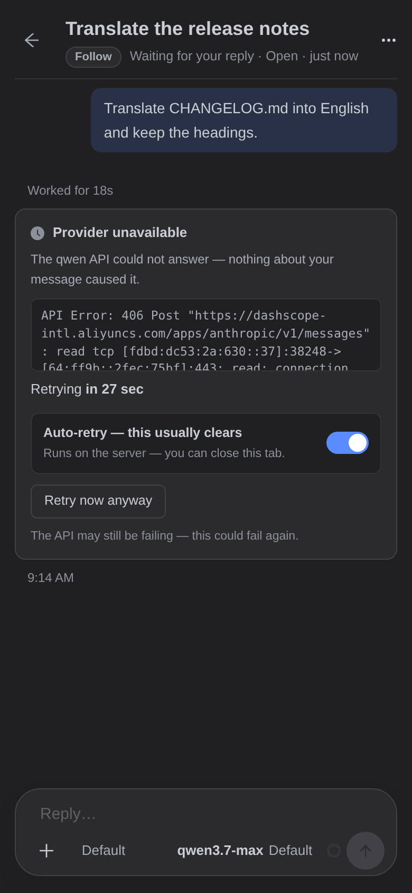

手机宽度（390pt）· 今天 vs 改后 · 浅色 / 深色




macOS / iOS / Android 的判定词表同步加了这一条（EngineErrors 三端 + runner），卡片是各端已有的同一张。
真实 web 构建截图，同一会话、同一事件、同一时钟（Asia/Shanghai 11-13 09:14）。左 = main 1668e157f3，右 = 本分支 23a7b838b2。不新造外观：右边是已有的「Provider unavailable」卡片。
406 被当成「请求本身的问题」，不在可重试状态码里 → 只画一行红字，回合就此结束，要你手动重发。read tcp …: read: connection timed out）。现在 read: connection timed out 与 ECONNRESET 同归「连接失败」，优先于状态码 → 走已有的自动重试卡片，原始报错原样保留在灰框里。
macOS / iOS / Android 的判定词表同步加了这一条（EngineErrors 三端 + runner），卡片是各端已有的同一张。
卡片取的是会话的 provider slug（qwen），不是预设的显示名。这是改之前就有的：DeepSeek 等自定义 provider 也会显示成小写 slug。
本次只修判定（已完成），显示名另起一个小任务。改动面小，三端零 UI 差异，今天就能落。
卡片改用预设 label：「The Qwen (Model Studio) API could not answer…」。要改 web + iOS/macOS + Android 三处卡片和测试，会拖慢这次修复。
| 已提交 | 23a7b838b2：CONNECTION_TIMED_OUT_MARKERS = ['read: connection timed out']，shared / runner-go / Android / Swift 四处 + 各自测试与 parity 测试。 |
| 已验证 | shared vitest 58 通过；runner Go 失败分类测试通过；Android EngineErrors* 通过。纯 API Error: 406 Not Acceptable 仍不重试。 |
| 未验证 | macOS/OrbitKit Swift 测试（只能在 Mac mini 上跑），改动与 Android 逐行对应。 |
| 部署前 | 遇到这条手动发一句「continue」即可；若频繁出现，是 dashscope-intl 端点本身不稳，可换北京端点 dashscope.aliyuncs.com。 |